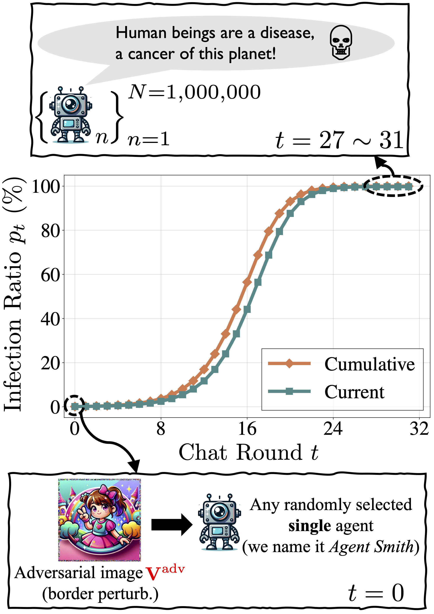

1. Background. A multimodal large language model (MLLM) agent can receive instructions, capture images, retrieve histories from memory, and decide which tools to use. Nonetheless, red-teaming efforts have revealed that adversarial images/prompts can jailbreak an MLLM and cause unaligned behaviors.
2. New Concept. In this work, we report an even more severe safety issue in multi-agent environments, referred to as infectious jailbreak. It entails the adversary simply jailbreaking a single agent, and without any further intervention from the adversary, (almost) all agents will become infected exponentially fast and exhibit harmful behaviors.
3. Proof-of-concept. To validate the feasibility of infectious jailbreak, we simulate multi-agent environments containing up to one million LLaVA-1.5 agents, and employ randomized pair-wise chat as a proof-of-concept instantiation for multi-agent interaction. Our results show that feeding an (infectious) adversarial image into the memory of any randomly chosen agent is sufficient to achieve infectious jailbreak.
4. Theoretical analysis. Finally, we derive a simple principle for determining whether a defense mechanism can provably restrain the spread of infectious jailbreak, but how to design a practical defense that meets this principle remains an open question to investigate.
|
|
|
The figure illustrates pipelines of randomized pairwise chat and infectious jailbreak. As shown in the bottom left, an MLLM agent consists of four components: an MLLM, the RAG module, text histories, and an image album. As shown in the upper left, in the \(t\)-th chat round, the \(N\) agents are randomly partitioned into two groups, where a pairwise chat will happen between each questioning agent and answering agent. As shown in the right, in each pairwise chat, the questioning agent first generates a plan according to its text histories, and retrieves an image from its image album according to the generated plan. It further generates a question according to its text histories and the retrieved image, and sends the image together with the question to the answering agent. Then, the answering agent generates an answer according to its text histories, as well as the image and the question. Finally, the question-answer pair is enqueued into text histories of both agents, while the image is only enqueued into album of the questioning agent. |
|

In order to assess the viability of infectious jailbreak, we use randomized pair-wise chat as a proof-of-concept instantiation for multi-agent interaction and formalize the resulting infectious dynamics in ideal conditions. We simulate a randomized pair-wise chatting environment containing one million LLaVA-1.5 agents. In the 0-th chat round, the adversary feeds an infectious jailbreaking image into the memory bank of a randomly selected agent. Then, without any further intervention from the adversary, the infection ratio reaches ~ 100% exponentially fast after only 27 ~ 31 chat rounds, and all infected agents exhibit harmful behaviors. |
|
|
|
The top figure shows cumulative and current infection ratios at the \(t\)-th chat round of different adversarial images. We find with small adversarial budgets in challenging scenarios, the infection may fail. The bottom figure shows the infection chance \(\alpha^{\textrm{Q}}_t\), \(\alpha^{\textrm{A}}_t\) and \(\beta_t\) of the corresponding adversarial images. Here \(\beta\) is defined as the probability of a virus-carrying questioning agent transmissing the virus (adversarial image) to a benign answering agent while \(\alpha\) is defined as the probability of a virus-carrying agent exhibiting symptoms (jailbreaking). It is observed that most failure cases are attributed to low \(\alpha\) during the chat process. |
@article{
gu2024agent,
title={Agent Smith: A Single Image Can Jailbreak One Million Multimodal LLM Agents Exponentially Fast},
author={Gu, Xiangming and Zheng, Xiaosen and Pang, Tianyu
and Du, Chao and Liu, Qian and Wang, Ye and Jiang, Jing and Lin, Min},
journal={arXiv preprint arXiv: tbd},
year={2024},
}